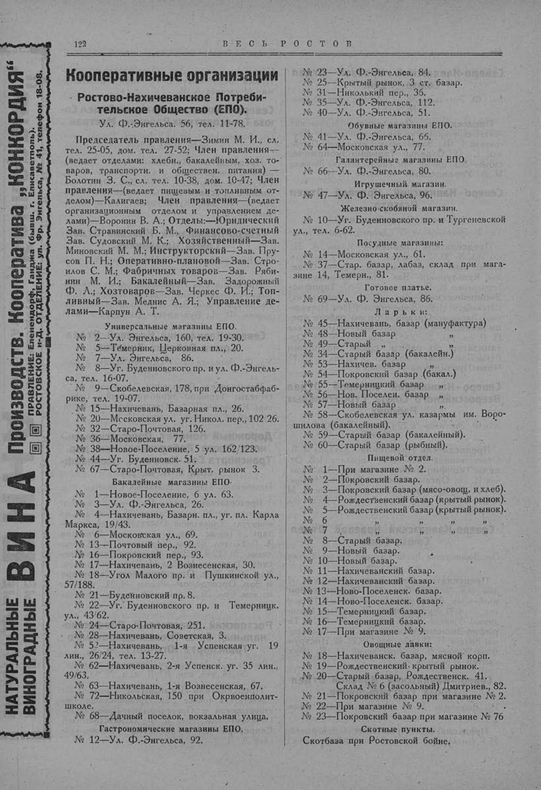

Лист источника 172
Скан

Распознанный текст
122 В Е С Ь Р О С Т О В
НАТУРАЛЬНЫЕ
ВИНОГРАДНЫЕ
ВИНА
Производств. Кооператива „КОНКОРДИЯ“
ПРАВЛЕНИЕ: Еленендорф, Ганджа (бывш. г. Елисаветполь).
РОСТОВСКОЕ н-Д. ОТДЕЛЕНИЕ: ул. Фр. Энгельса, № 41, телефон 18-08.
Кооперативные организации
Ростово-Нахичеванское Потреби-
тельское Общество (ЕПО).
Ул. Ф.-Энгельса. 56, тел. 11-78.
Председатель правления—Зимин М. И., сл.
тел. 25-05, дом. тел. 27-52; Член правления—
(ведает отделами: хлебн., бакалейным, хоз. то-
варов, транспортн. и обществен. питания) —
Болотин З. С., сл. тел. 10-38, дом. 10-47; Член
правления—(ведает пищевым и топливным от-
делом)—Калигаев; Член правления—(ведает
организационным отделом и управлением де-
лами)—Воронин В. А.; Отделы:—Юридический
Зав. Стравинский Б. М., Финансово-счетный
Зав. Судовский М. К.; Хозяйственный—Зав.
Миновский М. М.; Инструкторский—Зав. Пру-
сов П. Н.; Оперативно-плановой—Зав. Стро-
илов С. М.; Фабричных товаров—Зав. Ряби-
нин М. И.; Бакалейный—Зав. Задорожный
Ф. А.; Хозтоваров—Зав. Черкес Ф. И.; Топ-
ливный—Зав. Меднис А. Я.; Управление де-
лами—Карпун А. Т.
Универсальные магазины ЕПО.
№ 2—Ул. Энгельса, 160, тел. 19-30.
№ 5—Темерник, Церковная пл., 20.
№ 7—Ул. Энгельса, 86.
№ 8—Уг. Буденновского пр. и ул. Ф.-Энгель-
са, тел. 16-07.
№ 9—Скобелевская, 178, при Донгостабфаб-
рике, тел. 19-07.
№ 15—Нахичевань, Базарная пл., 26.
№ 20—Московская ул. уг. Никол. пер., 102 26.
№ 32—Старо-Почтовая, 126.
№ 36—Московская, 77.
№ 38—Новое-Поселение, 5 ул. 162/123.
№ 44—Уг. Буденновск. 51.
№ 67—Старо-Почтовая, Крыт. рынок 3.
Бакалейные магазины ЕПО.
№ 1—Новое-Поселение, 6 ул. 63.
№ 3—Ул. Ф.-Энгельса, 26.
№ 4—Нахичевань, Базарн. пл., уг. пл. Карла
Маркса, 19/43.
№ 6—Московская ул., 69.
№ 13—Почтовый пер., 92.
№ 16—Покровский пер., 93.
№ 17—Нахичевань, 2 Вознесенская, 30.
№ 18—Угол Малого пр. и Пушкинской ул.,
57/188.
№ 21—Буденновский пр. 8.
№ 22—Уг. Буденновского пр. и Темерницк.
ул., 43/62.
№ 24—Старо-Почтовая, 251.
№ 28—Нахичевань, Советская, 3.
№ 52—Нахичевань, 1-я Успенская уг. 19
лин., 26/24, тел. 13-27.
№ 62—Нахичевань, 2-я Успенск. уг. 35 лин.,
49/63.
№ 63—Нахичевань, 1-я Вознесенская, 67.
№ 72—Никольская, 150 при Окрвоенполит-
школе.
№ 68—Дачный поселок, вокзальная улица.
Гастрономические магазины ЕПО.
№ 12—Ул. Ф.-Энгельса, 92.
№ 23—Ул. Ф.-Энгельса, 84.
№ 25—Крытый рынок, 3 ст. базар.
№ 31—Никольский пер., 36.
№ 35—Ул. Ф.-Энгельса, 112.
№ 40—Ул. Ф.-Энгельса, 51.
Обувные магазины ЕПО.
№ 41—Ул. Ф.-Энгельса, 66.
№ 64—Московская ул., 77.
Галантерейные магазины ЕПО.
№ 66—Ул. Ф.-Энгельса, 80.
Игрушечный магазин.
№ 47—Ул. Ф. Энгельса, 96.
Железно-скобяной магазин.
№ 10—Уг. Буденновского пр. и Тургеневской
ул., тел. 6-62.
Посудные магазины:
№ 14—Московская ул., 61.
№ 37—Стар. базар, лабаз, склад при мага-
зине 14, Темерн., 81.
Готовое платье.
№ 69—Ул. Ф. Энгельса, 86.
Л а р ь к и:
№ 45—Нахичевань, базар (мануфактура)
№ 48—Новый базар "
№ 49—Старый " "
№ 34—Старый базар (бакалейн.)
№ 53—Нахичев. базар "
№ 54—Покровский базар (бакал.)
№ 55—Темерницкий базар "
№ 56—Нов. Поселен. базар "
№ 57—Новый базар "
№ 58—Скобелевская ул. казармы им. Воро-
шилова (бакалейный).
№ 59—Старый базар (бакалейный).
№ 60—Старый базар (рыбный).
Пищевой отдел.
№ 1—При магазине № 2.
№ 2—Покровский базар.
№ 3—Покровский базар (мясо-овощ. и хлеб).
№ 4—Рождественский базар (крытый рынок).
№ 5—Рождественский базар (крытый рынок).
№ 6 " " " "
№ 7 " " " "
№ 8—Старый базар.
№ 9—Новый базар.
№ 10—Новый базар.
№ 11—Нахичеванский базар.
№ 12—Нахичеванский базар.
№ 13—Ново-Поселенск. базар.
№ 14—Ново-Поселенск. базар.
№ 15—Темерницкий базар.
№ 16—Темерницкий базар.
№ 17—При магазине № 9.
Овощные лавки:
№ 18—Нахичеванск. базар, мясной корп.
№ 19—Рождественский крытый рынок.
№ 20—Старый базар, Рождественск. 41.
Склад № 6 (засольный) Дмитриев., 82.
№ 21—Покровский базар при магазине № 2.
№ 22—При магазине № 9.
№ 23—Покровский базар при магазине № 76
Скотные пункты.
Скотбаза при Ростовской бойне,